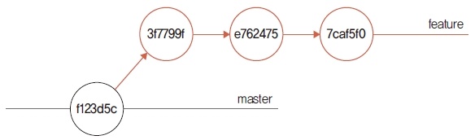

깃의 가장 간단한 브랜치 병합은 Fast-Forward 방식입니다. 영어 표현을 풀어 쓰면 빨리 감기라고 할 수 있습니다. 일반적으로 Fast-Forward 병합 방식은 혼자 개발할 때 사용합니다.
혼자 개발할 때는 브랜치가 생성된 커밋에 따라 순차적으로 분기됩니다. 또 코드 수정도 순차적으로 할 때가 많습니다. 즉, 브랜치가 분기되지만 전체 커밋 그림으로 보면 모든 변경 사항은 순차적으로 진행됩니다. 이러한 순차적 커밋에 맞추어 병합을 처리하는 방법이 Fast-Forward 병합입니다.
실습을 위해 새로운 feature 브랜치를 생성하겠습니다. 그리고 feature 브랜치로 체크아웃합니다.
infoh@DESKTOP MINGW64 /e/gitstudy08 (master)
$ git branch feature ☜ 브랜치 생성
infoh@DESKTOP MINGW64 /e/gitstudy08 (master)
$ git checkout feature ☜ 브랜치 이동
Switched to branch 'feature'
infoh@DESKTOP MINGW64 /e/gitstudy08 (feature)
브랜치를 생성할 때 분기 기준은 master의 최종 커밋 포인터입니다. 포인터를 확인할 수 있는 rev-parse 명령어로 확인해 봅시다. 첫 번째 커밋 f123d5c와 값이 동일합니다.
infoh@DESKTOP MINGW64 /e/gitstudy08 (feature)
$ git rev-parse feature
f123d5c9fd0c1f8a2f4ec86f63451a179371ae09
이 내용은 다음과 같이 나타낼 수 있습니다.
그림 8-3] 브랜치 생성

소스트리에서 생성된 브랜치를 확인할 수 있습니다. 이 장에서는 깃 배시와 소스트리를 번갈아 가며 실습을 합니다. 먼저 소스트리의 새 탭에서 Add 버튼을 클릭합니다. 탐색을 눌러 앞에서 만든 gitstudy08 폴더를 찾아 선택한 후 추가를 누릅니다. 그러면 gitstudy08 저장소와 연결됩니다.
생성한 feature 브랜치를 클릭하면 feature 브랜치와 master 브랜치의 시작 위치가 동일한 것을 확인할 수 있습니다.
그림 8-4] 소스트리에서 브랜치 위치 확인

생성한 feature 브랜치 안에 있는 index.htm 파일을 수정하겠습니다.
infoh@DESKTOP MINGW64 /e/gitstudy08 (feature)
$ code index.htm ☜ VS Code 실행
index.htm
<!DOCTYPE html>
<html>
<head>
<meta charset="utf-8" />
<meta name="viewport" content="width=device-width, initial-scale=1">
<title>Page Title</title>
</head>
코드에 <header></header> 태그를 삽입하고 저장합니다. 기존 코드를 수정했기 때문에 파일 상태는 modified로 변경됩니다. 다음과 같이 수정한 파일을 커밋합니다. -a 옵션과 같이 사용하면 스테이지 영역을 추가하면서 동시에 커밋을 할 수 있습니다.
infoh@DESKTOP MINGW64 /e/gitstudy08 (feature)
$ git commit -am "add header"
[feature 3f7799f] add header
1 file changed, 2 insertions(+)
소스트리에서 커밋 로그를 확인해 보겠습니다. feature 브랜치가 master 브랜치보다 커밋이 하나 더 있는 것을 볼 수 있습니다.
그림 8-6] 소스트리에서 커밋 위치 확인

실습을 위해 수정과 커밋을 몇 번 더 합시다. 이번에는 <header> 코드 안에 <ul><li> 태그를 추가하여 두 번 커밋할 것입니다.
infoh@DESKTOP MINGW64 /e/gitstudy08 (feature)
$ code index.htm
index.htm
<!DOCTYPE html>
<html>
<head>
<meta charset="utf-8" />
<meta name="viewport" content="width=device-width, initial-scale=1">
<title>Page Title</title>
</head>
<body>
<header>
<ul>
<li>깃소개</li>
</ul>
</header>
<h1>hello GIT world!</h1>
</body>
</html>
infoh@DESKTOP MINGW64 /e/gitstudy08 (feature)
$ git commit -am "add menu1"
[feature e762475] add menu1
1 file changed, 3 insertions(+)
index.htm
<!DOCTYPE html>
<html>
<head>
<meta charset="utf-8" />
<meta name="viewport" content="width=device-width, initial-scale=1">
<title>Page Title</title>
</head>
<body>
<header>
<ul>
<li>깃소개</li>
<li>깃설치</li>
</ul>
</header>
<h1>hello GIT world!</h1>
</body>
</html>
infoh@DESKTOP MINGW64 /e/gitstudy08 (feature)
$ git commit -am "add menu2"
[feature 7caf5f0] add menu2
1 file changed, 1 insertion(+)
지금까지 과정을 그림으로 나타내면 다음과 같습니다.
그림 8-7] 브랜치 생성 후 추가 커밋 진행 상태

feature 브랜치에 추가된 커밋 로그를 확인해 봅시다.
infoh@DESKTOP MINGW64 /e/gitstudy08 (feature)
$ git log
commit 7caf5f028ba013f1eb74e2f6c8cc400c02b0eb9c (HEAD -> feature)
Author: hojin <infohojin@gmail.com>
Date: Thu May 16 16:54:30 2019 +0900
add menu2
commit e76247541b07357220b042450aaf4a8aae037342
Author: hojin <infohojin@gmail.com>
Date: Thu May 16 16:53:55 2019 +0900
add menu1
commit 3f7799fb86b2b9abd980c26b1b2f33791e6708cf
Author: hojin <infohojin@gmail.com>
Date: Thu May 16 16:45:42 2019 +0900
add header
commit f123d5c9fd0c1f8a2f4ec86f63451a179371ae09 (master)
Author: hojin <infohojin@gmail.com>
Date: Thu May 16 16:14:38 2019 +0900
first
소스트리에서 브랜치의 커밋 로그를 확인해 보면, feature 브랜치가 master 브랜치에서 분리되어 header, menu1, menu2 커밋 작업을 세 번 수행한 것을 확인할 수 있습니다.
그림 8-8] feature 브랜치에 세 번 커밋됨

우리는 브랜치를 만들어 feature 브랜치에 기능을 추가했습니다. 하지만 소스트리에서 브랜치를 확인하면 브랜치 경로가 일직선으로 1개만 있습니다. 서로 다른 브랜치이지만 순차적으로 커밋을 했기 때문에 일직선으로 보이는 것입니다. 이러한 모양의 브랜치에서 병합 작업을 할 때는 Fast-Forward 방식의 알고리즘이 적용됩니다.
깃의 merge 명령어는 브랜치를 병합합니다. merge 명령어는 현재 브랜치를 기준으로 다른 브랜치의 모든 커밋을 병합합니다.
$ git merge 브랜치이름
브랜치를 병합하려면 기준과 대상이 있어야 합니다. 기준은 체크아웃된 현재 브랜치입니다. 따라서 병합하려면 먼저 기준이 되는 브랜치로 이동해야 합니다. 우리는 master 브랜치에서 feature 브랜치로 분기하여 작업했습니다. 작업한 feature 브랜치를 다시 master 브랜치로 병합할 것입니다. 병합을 하려면 먼저 master 브랜치로 체크아웃해야 합니다.
infoh@DESKTOP MINGW64 /e/gitstudy08 (feature)
$ git checkout master ☜ 기준 브랜치로 이동
Switched to branch 'master'
infoh@DESKTOP MINGW64 /e/gitstudy08 (master)
병합을 할 수 있게 기준 브랜치(master 브랜치)로 이동했습니다.
그림 8-9] 병합을 할 수 있게 기준 브랜치로 이동

master 브랜치로 체크아웃한 상태에서 파일(코드)을 확인해 봅시다. feature 브랜치에서 작업한 내용이 사라졌습니다.
infoh@DESKTOP MINGW64 /e/gitstudy08 (master)
$ code index.htm
index.htm
<!DOCTYPE html>
<html>
<head>
<meta charset="utf-8" />
<meta name="viewport" content="width=device-width, initial-scale=1">
<title>Page Title</title>
</head>
<body>
<h1>hello GIT world!</h1>
</body>
</html>
원본의 master 브랜치에서 작업한 내용만 출력됩니다. 이처럼 브랜치는 기존 원본을 유지한 상태에서 서로 간섭하지 않고 feature 브랜치에서 코드를 수정할 수 있습니다. 이제 feature 브랜치에서 작업한 내용을 병합해 보겠습니다.
커밋 작업은 분기된 feature 브랜치에서 모두 수행했습니다. 아직 master 브랜치에는 추가된 커밋이 없습니다. 이러한 상태에서 두 브랜치를 병합합시다.
infoh@DESKTOP MINGW64 /e/gitstudy08 (master)
$ git merge feature ☜ feature 브랜치를 병함
Updating f123d5c..7caf5f0
Fast-forward ☜ 병합 방식 표시
index.htm | 6 ++++++
1 file changed, 6 insertions(+)
feature 브랜치의 커밋을 master 브랜치에 병합했습니다. 병합 메시지를 확인해 볼까요? 메시지에 Fast-Forward 방식을 사용하여 병합했다고 출력됩니다.
이 과정을 그림으로 나타내면 다음과 같습니다.
그림 8-10] 병합한 후 커밋 구조

이 그림처럼 feature 브랜치의 커밋들이 하나씩 master 브랜치로 병합합니다. master 브랜치에는 커밋이 하나도 없기 때문에 feature 브랜치가 master 브랜치로 이동한 것처럼 보입니다. 소스트리에서 병합 결과를 확인합니다.
그림 8-11] 소스트리에서 병합 결과 확인

이처럼 병합한 후에는 master 브랜치의 마지막 커밋 위치와 feature 브랜치의 마지막 커밋 위치가 같습니다. 동일한 HEAD 포인터를 가지게 됩니다.
log 명령어로 커밋 기록을 확인합시다.
infoh@DESKTOP MINGW64 /e/gitstudy08 (master)
$ git log -1
commit 7caf5f028ba013f1eb74e2f6c8cc400c02b0eb9c (HEAD -> master, feature)
Author: hojin <infohojin@gmail.com>
Date: Thu May 16 16:54:30 2019 +0900
add menu2
Fast-Forward 병합은 작업한 브랜치를 원본 브랜치에 병합할 때 작업한 브랜치의 시작 커밋을 원본 브랜치 이후의 커밋으로 가리킵니다. 이는 단순히 커밋 위치를 최신으로 옮기는 것과 비슷합니다.
Fast-Forward 병합을 잘했는지 결과를 확인해 봅시다. master 브랜치의 원본 파일에 feature 브랜치에서 수정한 내용이 반영되어 있으면 잘 병합한 것입니다.
infoh@DESKTOP MINGW64 /e/gitstudy08 (master)
$ code index.htm
index.htm
<!DOCTYPE html>
<html>
<head>
<meta charset="utf-8" />
<meta name="viewport" content="width=device-width, initial-scale=1">
<title>Page Title</title>
</head>
<body>
<header>
<ul>
<li>깃소개</li>
<li>깃설치</li>
</ul>
</header>
<h1>hello GIT world!</h1>
</body>
</html>
master 브랜치의 index.htm 파일을 확인해 보니 잘 병합했네요. Fast-Forward 병합은 병합할 하나의 브랜치 파일을 기준 브랜치로 복사하여 수정된 파일을 원본에 그대로 적용한 것과 같습니다. 즉, 원본에 추가된 내용이 없다는 가정하에 변경한 파일을 대체하는 것입니다.